The legislative election of 18 May 2025 — do the numbers add up?
No traces of fraud in the data
Same votes, different counting rules — different winners
PS finished 4,313 votes ahead of CH — and 2 seats behind (58 vs 60)
Under winner-take-all districts, AD's 33% of votes becomes 69–76% of the wins
What was decided on 18 May 2025
Snap election for the Assembly of the Republic (230 seats). The centre-right coalition AD won 32.7%, ahead of the Socialist Party (23.4%) and Chega (22.6%). National turnout: 64.4% — 5.97 million ballots cast.
National result — 3,092 parishes (overseas circle excluded)
The overseas circle (~1.6 million registered voters) is not part of the parish-level official export; percentages above are shares of ballots cast.
Same votes, different rules — different results
How much do the rules themselves decide? I re-counted the same ballots under alternative rules — one national district, winner-take-all territories, different alliances, the two-round runoff. Theory calls these voting paradoxes; on this data they are simply measurements.
The PS–CH tie flips three ways
PS finished 4,313 votes ahead of CH nationally (23.81% vs 23.74%) — yet took 2 fewer seats: 58 against 60, under Portugal's 22 D'Hondt circles. One national district would tie them at 56 : 56. Winner-take-all parishes: PS leads 429 : 309. Winner-take-all municipalities: CH leads 67 : 34.
Alliances, not voters, move 60+ seats
Re-running D'Hondt on the identical votes: AD and CH united — 154 seats, a constitutional majority. A united left of five parties (34.1% of the votes) — 84 seats, ahead of AD's 81. AD split as in 2022 — minus 4 seats, handed to PS and CH. Not one ballot changes.
In the real plurality races, minorities govern
Municipal presidents are elected first-past-the-post — the rule most exposed to vote-splitting. In October 2025, 142 of 308 winning lists had no majority; in 49 câmaras the opposing bloc combined had more votes. In Lisboa: 42.8% for the winner, 45.2% for the losing bloc.
Rule 1 · National votes, districts, winner-take-all
Portugal hands out 230 seats over 22 D'Hondt circles — no national tier, no majority bonus. The same ballots, counted four ways:
| List | National votes | D'Hondt seats (actual) | One national district | Concelhos (FPTP sim.) | Freguesias (FPTP sim.) |
|---|---|---|---|---|---|
| AD | 33.2% | 91 | 78 | 224 / 325 | 2,343 / 3,092 |
| PS | 23.8% · leads | 58 | 56 | 34 / 325 | 429 / 3,092 |
| CH | 23.7% | 60 · leads | 56 | 67 / 325 | 309 / 3,092 |
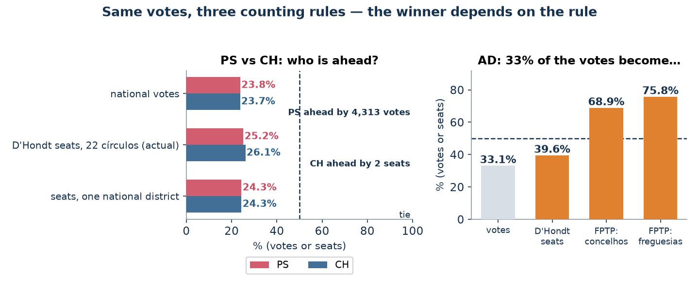
Rule 2 · Who runs together — spoilers and clones
D'Hondt in medium-sized circles punishes splits and rewards merges. Merge or split the lists, keep every vote exactly where it was, re-run the allocation — the seat totals swing by more than most parliamentary majorities:
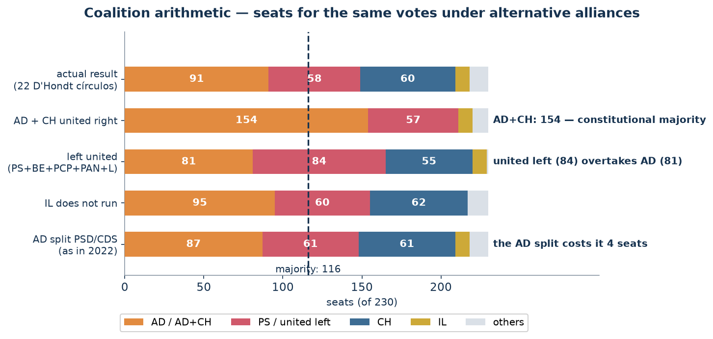
Rule 3 · Real first-past-the-post — the câmaras
Municipal presidents (12.10.2025) are the one real plurality race in Portugal. 142 of 308 winners took office below 50%; in 49 câmaras the opposing ideological bloc combined outvoted the winner — the frustrated-majority paradox on real, non-designed territories.
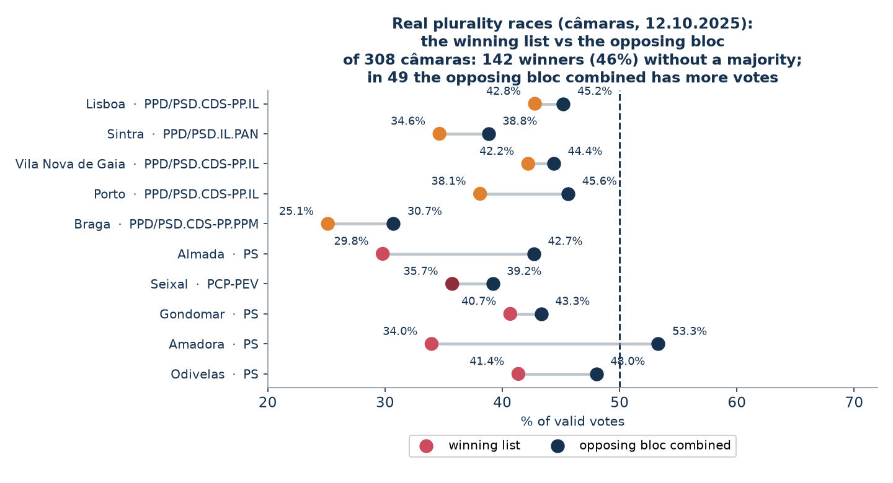
Rule 4 · The two-round runoff
January 2026: only the top two advanced, while the eliminated centre (Cotrim + Gouveia + Mendes) held 39.8% of valid votes. Where those voters went, by an ecological estimate (R² = 0.997): Cotrim's split — 40% Seguro, 23% Ventura, 21% blank or null; Gouveia and Mendes — about 77% to Seguro. Blank ballots almost tripled between the rounds.
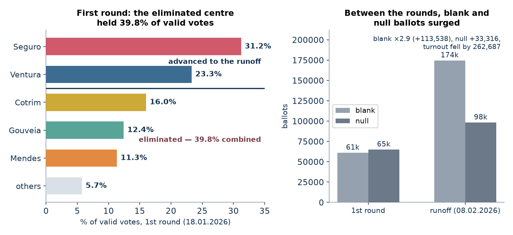
Manipulation detection test results
Nine families of tests used by election statisticians worldwide, run on the official parish data with open-source code. Summary: all clean.
✓
Anomalous-vote estimate (Shpilkin method)
Beyond the honest decline: 2,980 AD votes = 0.15% of the party’s votes. Recounting without that zone moves the result from 32.72% to 32.71%.
The Shpilkin method models the honest bell curve of turnout and measures the votes sitting beyond it — the 80–100% zone where ballot-stuffing lands. The anomaly boundary (78.6%) is not fitted to these data: it is the upper percentile of the 2022 and 2024 control elections. Beyond it stand 7,779 voters (0.13% of ballots) carrying 2,980 votes for AD = 0.15% of the party’s total; recounting without that zone moves AD from 32.72% to 32.71%.
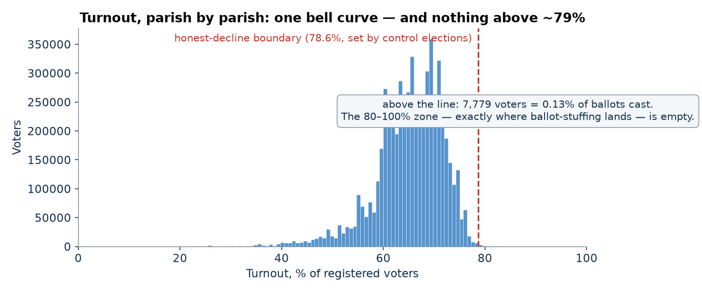
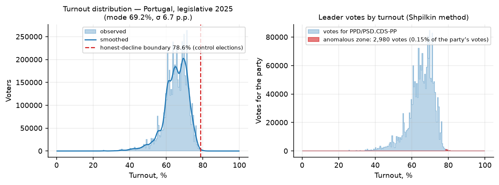
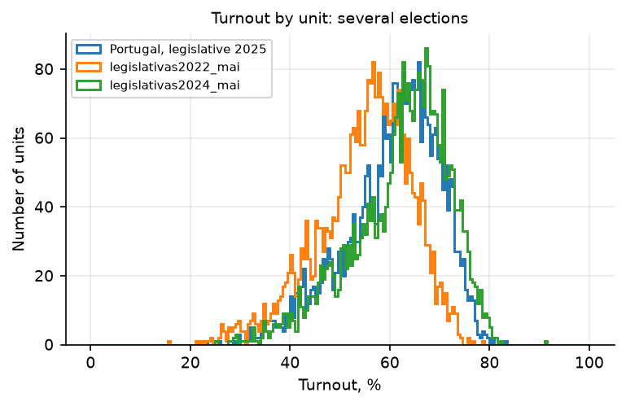
✓
Turnout × result scatter (“comet tail”)
A continuous cloud with no “tail” of high-turnout, high-AD parishes — the signature ballot-stuffing produces.
In a manipulated count the turnout × result scatter stretches into a “comet tail”: as turnout rises, the leading party’s share climbs while opponents fade. Here the clouds of AD, PS and CH all stay vertically compact over the whole turnout range; the weighted turnout × share correlation of the leader is −0.09. The tail that stuffing produces is absent.
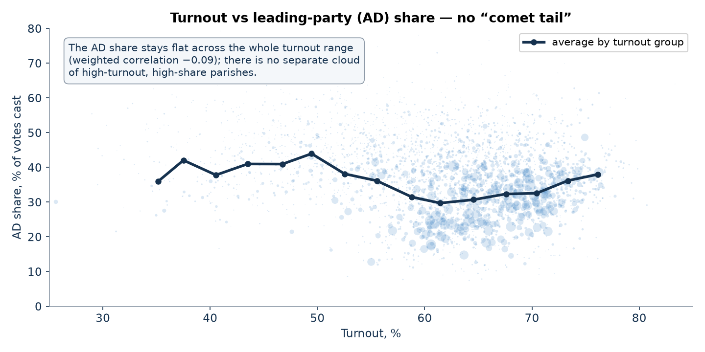
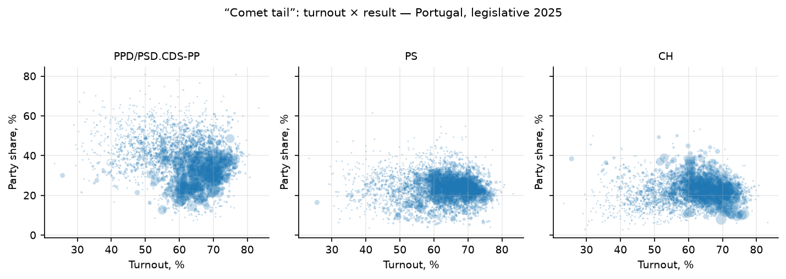
✓
Election fingerprints (Klimek et al.)
The distribution matches honest elections; the 2D cluster typical of fraud (80–100% turnout with a high share) is absent. The clusters that do exist track geography.
The “election fingerprint” (Klimek et al., PNAS 2012) is the 2D density of turnout vs the leader’s share; stuffing appears as a compact second cluster in the up-right corner — high turnout AND high share. A two-Gaussian mixture finds only two components, (60.0%, 39.7%) and (66.7%, 29.2%): rural parishes of the north versus the south and the cities — electorate heterogeneity, not fraud. The up-right cluster typical of manipulated elections is absent (second-component weight 0.66).
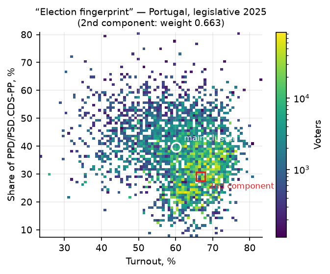
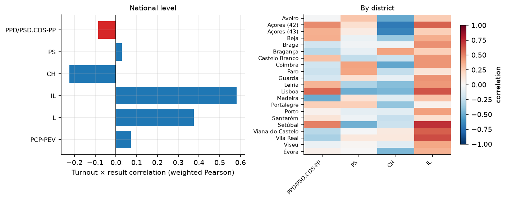
✓
Round-number peaks (Kobak et al.)
Parishes with exactly whole-percentage turnout: 1.46% vs 1.44% expected by chance (z = 0.1); no excess of multiples of 5, none in the leader’s share either (z between −0.4 and +0.1).
Numbers invented at a desk cluster on round values, so the share of units with exactly whole-percent turnout betrays protocol fitting. Here it is 1.46% against 1.44% expected from the Monte-Carlo null (z = 0.1); multiples of 5 show no excess (z = −0.3), and neither does a whole-percent share of the leader (z between −0.4 and +0.1). Real protocol fitting pushes z into the tens — see the self-test below.
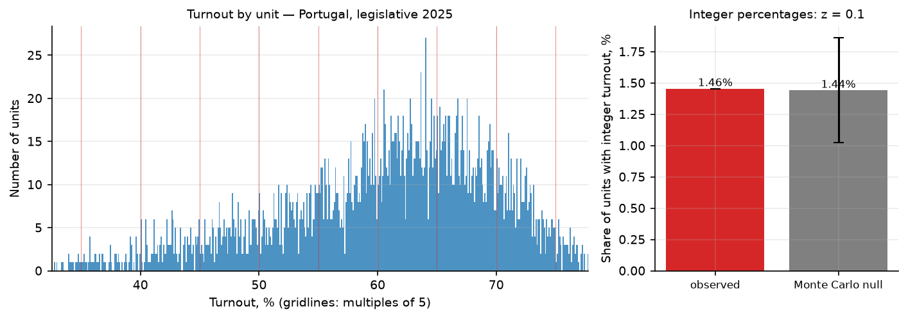
✓
Digit tests (Benford, last digit)
12 tests on vote counts: 11 clean. The only borderline value — AD, last digit, p = 0.02 (a deficit of digit 4) — has no “invented numbers” profile and is not significant after multiple-testing correction.
Two classic digit tests: Benford’s law on second digits and Beber–Scacco uniformity on last digits — human-invented counts under-produce round endings (0 and 5). Of 12 chi-square tests on the top-6 parties’ vote counts, 11 are clean (Benford: all p between 0.10 and 0.79). The single borderline value — AD, last digit, p = 0.02 — is a deficit of digit 4 (8.2% vs 10%) with no excess of round 0/5, i.e. not the “invented numbers” profile, and it does not survive multiple-testing correction.
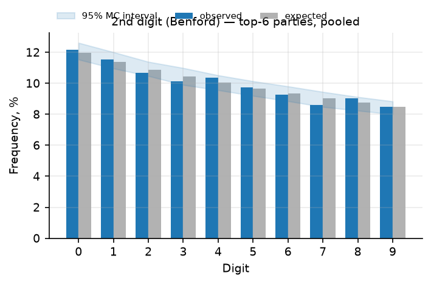
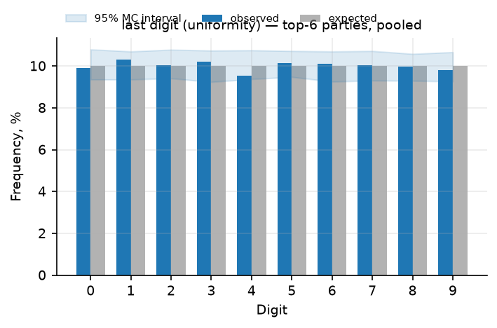
✓
Outliers vs neighbours + machine learning
81 of 3,092 parishes (2.6%) flagged by the neighbour screen and 31 (top 1% by construction) by machine learning — all tiny parishes with mixed directions; a normal statistical tail, not a pattern.
Two independent screens for odd parishes: each parish against the median of its own municipality (robust z-scores), and an Isolation Forest over each parish’s full profile (turnout, party shares, blank and invalid rates). The neighbour screen flags 81 of 3,092 parishes (2.6%) beyond |z| > 4 — an ordinary tail for 3,092 heterogeneous territories; machine learning flags exactly 31, the most unusual 1% by construction. All are minute parishes with mixed directions: the most extreme neighbour outlier (Anobra, 1,101 voters) is anomalously LOW for AD (z = −22.6) — the opposite of pro-leader stuffing — and the 31 machine-learning flags are tiny Azorean and mountain communities with high blank-ballot shares (up to 9–10%) that form no cluster in the turnout × result plane. Candidates for manual review, not a fraud signal.
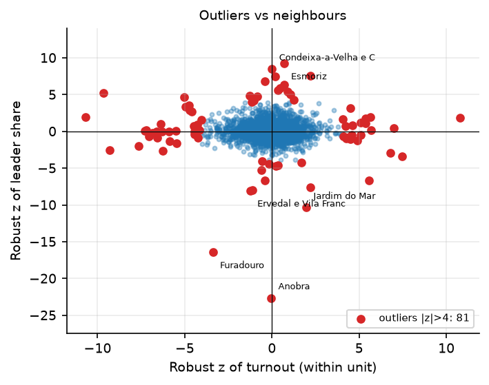
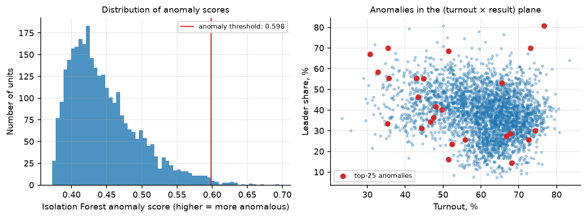
✓
Jumps versus the 2024 election
Not a single parish shows a simultaneous jump in turnout and in AD share above 15 points.
The sharpest manipulation signature versus a previous election is a double jump — turnout up AND the leader’s share up, sharply, in the same parish. Comparing the same 3,092 parishes with AR-2024: not a single one clears +15 p.p. in both at once. The changes that do exist track the reshuffling of coalitions between the two elections, not the counting.
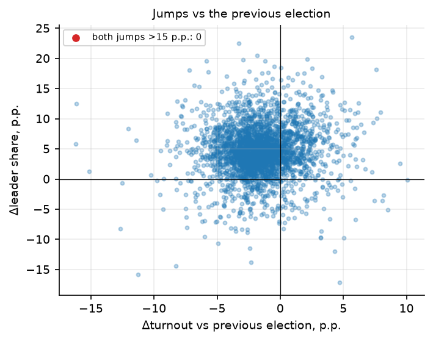
✓
Precinct protocols cross-checked against official totals
In six municipalities that publish precinct maps (91 precincts, 60,711 registered voters = 0.66% of the electorate), the precinct sums match the official totals of every list to the exact vote; the row arithmetic is exact; no duplicated protocols.
The one documentary check: six municipalities publish the official per-precinct maps (91 precincts, 60,711 registered voters = 0.66% of the electorate). Precinct sums match the official totals of every list to the exact vote; the row arithmetic is exact in all 91 protocols (votes + blank + invalid = ballots cast, cast + abstentions = registered); no two protocols coincide — the copy-paste signature of “drawn” results is absent. Honest caveat of scale: at n = 91 the self-test shows the round-number test cannot detect redrawing of ~9% of protocols, so this is a spot check of 0.66% of the electorate, not a national precinct audit.
✓
Self-test: the toolkit actually detects fraud
Synthetic stuffing injections fire every alarm (Shpilkin signal ×18; round-number z 0.2 → 5.1). The “clean” verdict is a real measurement.
A “clean” verdict is only meaningful if the tools can actually fire. Two synthetic frauds are injected into the same 3,092 parishes: ballot-stuffing (+131,629 AD ballots in 10% of parishes, turnout +5–35 p.p.) grows the anomalous-zone estimate from 14,589 to 255,496 votes (×18), and fitting turnout to whole percents in 5% of parishes pushes the round-number statistic from z = 0.2 to 5.1. Every alarm fires — the clean result above is a measurement, not a blind spot.
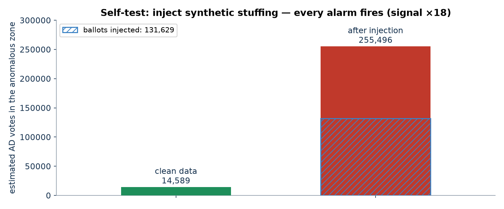
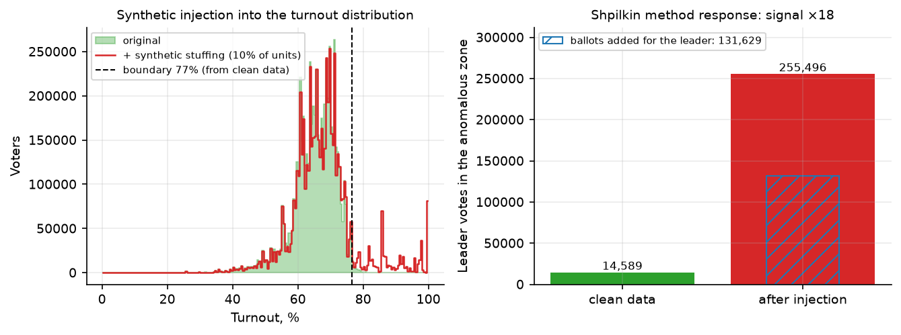
Data & reproducibility
- Source: official results portal of the Ministry of Internal Administration at eleicoes.mai.gov.pt — parish-level export, 3,092 territories (mainland, Madeira, Azores).
- Cross-checks: parish sums close exactly against the national totals; the precinct sums of the six publishing municipalities match the official totals to the exact vote.
- Toolkit: open-source election-forensics pipeline (Python, pandas / scikit-learn) implementing Shpilkin, Klimek, Kobak, Beber–Scacco and other methods.